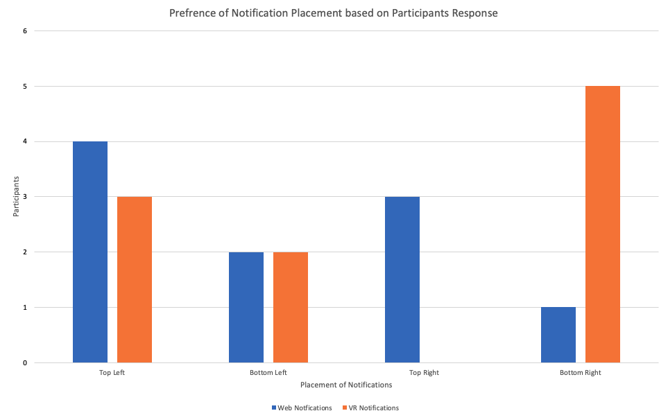

Notifications are a crucial part of any system’s user experience. As defined by Lauren Goode, in her piece for Wired,
“Notifications are, at the most basic level, a method of alerting people to some piece of information, often with some element of urgency” [Goode19].
In the early days of computers, notifications came in the form of icon flags and the occasional audible alerts.
Usage and how often you were alerted was limited to how often you strictly interacted with the computer,
with no simple solution to notify users when away from their personal computer.
However, in 2003, Blackberry introduced email notifications to your phone.
This ushered in an era of true instant communication, as now even when you were physically away from your computer, you could still receive email notifications.
Innovations addressing notifications would go stale until 2009 when Apple introduced its Apple Push Notification service (APNs) with iOS 3.0.
APNs worked through maintaining a continuous connection to the phone and Apple’s notification servers.
When a 3rd party service wanted to send a notification, they would send the data to Apple’s servers, which then would relay that information back to the user.
Google would follow by releasing its own similar service known as Google Cloud to Device Messaging (C2DM).
In the 12 years since the introduction of push notifications, both leading mobile platforms (iOS and Android) have implemented and improved how push notifications are handled,
from how and when they’re communicated to also how they’re displayed.
Nonetheless, there was still room for improvement. Interactive notifications came in 2014, which enabled another layer of interaction such as quick replying to a message or email.
This additional layer added another element of interaction in the UI, as now more operations to handle a notification were added,
such as swiping right for quick actions and left for notification dismissal.
Push notifications are also used in macOS and Windows, however, both systems follow less intrusive notification centers;
which display collections of notifications in a hidden side panel. While mobile platforms focus on touch interfaces to manage notifications,
both PC OSs use a mouse and keyboard as the main form of user interaction. While touchscreens enabled a 1:1 relationship with a gesture mapped to an action,
PCs require another layer of interaction due to the gestures provided by the mouse, alongside the physical clicks from the mouse as well.
While it does add additional complexity, PC notifications can offer more actions due to the more precise control of gestures and interactions.
With the introduction of the Meta Quest 2 (FKA Oculus Quest 2) in 2020, we saw the first mass-market, affordable, commercial VR headset.
Following the release of the Quest 2 headset, we saw Facebook (Meta) pivot its business towards virtual reality and the “Metaverse”.
The metaverse is a virtual 3D world that is focused on social interactions and connections.
While gaming was the first wave ushering us into the metaverse, Meta has promises of a platform with many use cases.
With this new wave of software interaction, notifications are once again back into their infancy.
There currently isn’t a tried and tested way to handle notifications in a virtual environment.
While Meta hasn’t reached the platform size of either Apple’s iOS or Alphabet’s Android, a proper notification system is still required for the platform to reach max adoption.
Currently, Oculus’s management of notifications is practically nonexistent, as most applications don’t have a proper suite to manage push notifications.
Our goal with Project Aurora is to create a productivity-focused dashboard that handles email and calendar notifications,
while also letting users customize how various notifications are presented and handled. Through the usage of an application developed for the Meta Quest 2,
Project Aurora’s research will be focused on how to achieve the best user experience regarding notification handling within a 3D virtual environment.
To complete this project, we developed a program that displays notifications in a 3D virtual environment. The users will then be prompted with notifications from different areas of the environment; the upper right-hand corner, lower right-hand corner, upper left-hand corner, and the bottom left-hand corner. To make sure all inputs are equally favored after each corner notification is handled, the user would have to reset their view back to the center. The actions in the corners and center are button inputs, which would require the user pays attention to the content while also giving us an idea of how users interact with the controller versus the mouse. We are using the center button as a way to signal the “core content” that a user may be working on or viewing. Once the user is focused on the center, similar to how we interact with notification content on our screens, the user then would be shown a notification in another corner.
The experiments were done using a within-subject design. There were 10 participants that completed a set of three trials in two different experiments. Before either the experiments were conducted each participant was asked what their OS preference was as well as where they would prefer notifications to be presented in VR. Majority of participants preferred MacOS and all participants preferred notifications to display in the top right of their field of view in VR. The objective of these experiment were to collect reaction times to notifications displayed in the web browser. The task was not to try and bet a specific time, but to see what placement of a notification they responded to the quickest. These reaction times were then averaged after the three trials to determine the participants quickest reaction to each notification placement. 
While our hypothesis did not come out in our favor, we conclude that while prior operating system usage does not translate core user interface details from platform to platform, we do think that preference is a strong element in how user interaction should be handled. This is because our data showcased how users were quick to adapt to changes, just within the trials they completed, and how even though the preferred route was not the fastest, users shared they felt their preference for the top-right corner was because it was the most comfortable and natural to use. We hope that with this data, future VR, AR, and XR developers can take our data and continue researching more about how information should be represented in a new environment, especially by comparing the values between one’s preference against their performance metrics.
PDF LINK
Latex Source LINK to github?
GITHUB: Project Aurora
Video [1] Short Video
Video [2]: Presentation